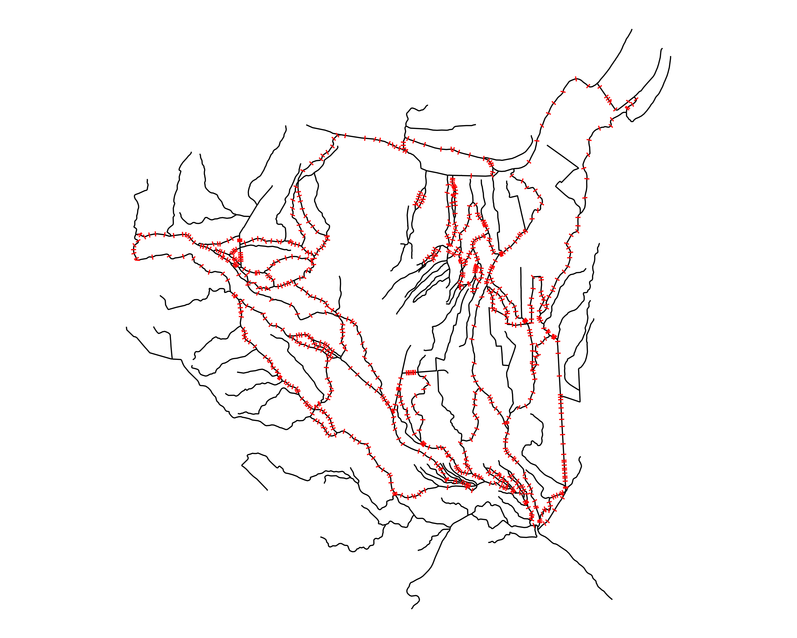

NOAA OWP Braided Cross Section Reparation
Angus Watters
Lynker, NOAA-Affiliatebraided_cross_sections.RmdIntroduction
This vignette breaks down the methods used within
hydrofabric3D to cut cross sections across complex braided
river networks. The following methods extend from the cross section
cutting algorithms explained here.
We begin with a testing set of braided flowlines located in Baton Rouge, LA. This area has a complex set of braids and highlights the need for rectifying cross section linestrings to better reflect the natural world.
Starting from the COMID 18717056, we traverse upstream 30km and get a set of 303 flowlines.
# Heavily braided network in Baton Rouge, LA
net <- nhdplusTools::navigate_network(start = 18717056, mode = "UT", distance_km = 30)
flood_plain_sections = 5
net <-
net %>%
# https://agupubs.onlinelibrary.wiley.com/doi/full/10.1002/2013WR013916
dplyr::mutate(
bf_width = exp(0.700 + 0.365* log(totdasqkm)),
cs_width = flood_plain_sections * bf_width
) %>%
dplyr::select(comid, divergence,bf_width, cs_width, lengthkm, totdasqkm, fromnode, tonode, terminalpa)
# set geometry name of network to "geometry"
net <- nhdplusTools::rename_geometry(net, "geometry")Now let’s add cross sections using the algorithm described here
transects <- hydrofabric3D::cut_cross_sections(
net = net,
id = "comid",
cs_widths = 200,
num = 10,
fix_braids = FALSE,
add = TRUE
)
#> Warning: st_centroid assumes attributes are constant over geometries
Here we have created our cross sections lines with 10 transect lines per COMID/flowline geometry. The problem here is that this section of river is braided and we want to have cross sections extend across multiple flowlines in some cases such that the cross section line represents that width across the braided river sections, instead of having individual transect lines for each of the parallel braided flowlines.
This presents a problem as braided systems are inherently complex and irregular. If we want to try and extend cross section lines across all flowlines in a given braid, the first thing we need is a way of uniquely identifying each braid and all of the flowlines within that braid.
To accomplish this, we made use of the flowline
from/tonode topology relationships, and implemented a Depth
First Search (DFS) graph traversal algorithm on the flowline network.
The DFS algorithm was implemented in such a way as to identify and
return the set of COMIDs that make each individual closed loop braid in
the network.
Locate braided flowlines
The find_braids() function can be used to identify and
assign a braid_id to each flowline in a NHDPlus network
dataset. The input network data must include a comid,
fromnode, tonode, and divergence
attributes.
# add braid_id column to network
braids <- hydrofabric3D::find_braids(
network = net,
add = TRUE,
nested = TRUE
)
#> Warning in nhdplusTools::make_node_topology(network, div, add = TRUE):
#> nhdplusTools make_node_topology is deprecated. Use hydroloom version.
#> Warning in nhdplusTools::make_node_topology(network, div, add = TRUE):
#> nhdplusTools make_node_topology is deprecated. Use hydroloom version.
Now we have a method for identifying which flowlines are part of a braid and unique ID for each of the braids in the network. Next, we will find the cross section lines that are on these braided flowlines, and work on extending them to encompass the entire width of the river by crossing across the rest of the braided flowlines.
First we want to join our transect lines with the sections of rivers
with all flowlines that have a braid_id (flowlines that are
NOT part of a braid have a braid_id of “no_braid”)
So we seperate the braided flowlines from the non braided flowlines:
# not braided flowlines
not_braids <- dplyr::filter(braids, braid_id == "no_braid")
# trim down network to just the braided parts, and add a comid count to separate out multibraids
braids <- dplyr::filter(braids, braid_id != "no_braid")
# add connected component "component_id" column
braids <- find_connected_components(braids)
#> Warning in nhdplusTools::make_node_topology(network, div, add = TRUE):
#> nhdplusTools make_node_topology is deprecated. Use hydroloom version.Then join the braided flowlines with the transects
cross_sections <-
transects %>%
dplyr::filter(hy_id %in% braids$comid) %>%
dplyr::left_join(
sf::st_drop_geometry(
dplyr::select(
braids, comid, braid_id, is_multibraid
)
),
by = c("hy_id" = "comid")
) %>%
dplyr::arrange(-totdasqkm)That gives us this set of all cross sections on braided flowlines:

We can now iterate over all of these cross sections and determine which cross sections should be extended, in what order, and by what distance.
Identify flowlines to extend across
For each braided COMID, we want to take each of the cross sections lines on that COMID and try to extend these cross sections to cut across all of the other relevant braided flowlines in the area. The image below highlights for the “origin” COMID (blue), which other flowlines (red) are selected for the transect algorithm to try and cut across to generate an extended cross section geometry.
The red flowlines are the set of all neighboring braided flowlines of the “origin” COMID (blue). transect extension algorithm takes transect linestrings on the blue COMID and tries to extend these cross sections to cut across all of the neighboring flowlines (red)

To see this for all braided flowlines in the network, the animation below walks through each COMID of the braided flowlines (blue), and shows which of the remaining other braided flowlines are eligible to be cut across from the any of the cross sections lines on the “origin” COMID (blue).

If we look at an individual COMID in a given braid, and we decide we want to extend our cross sections for that COMID outward to try and cut across other flowlines within the same braided system, we now have a method for selecting which other COMIDs are candidates for the extended line to cut across.
If we didn’t come up with a way of distinguishing which flowlines our extended transect lines were allowed to cross over, then our algorithm would ultimately try and extend each transect out indefinitely/attempt to cut across ALL other flowlines in the network. This wouldn’t make hydrologic or computational sense.
Order of extensions
When ever we take a transect line and extend it outward in either direction, we run into the possibility that our newly extended transect line will now violate one of the fundemental properties of our cross sections:
- The extended transect line now intersects with another flowline outside of the braided area
- The extended transect line now intersects with another transect line
- The extended transect line now intersects with its own COMID/flowline
Moreover, some flowlines in a braided system should be given priority over other flowlines when it comes to the order that their transects are extended. Transect lines in the middle of a braided system should be extended first as they are likely to produce the most representative transect line, so we want to prioritize extending these first.
Determining the middle flowline in a braided system was a challenge. In some cases, the mainstem flowline is the middle flowline within a braid, but in some cases this isn’t the case. We found a solution that relies on the number of intersections a flowlines transect line has when it is extended in either direction. From each transect line, we can count the number of intersections on either side of the transect when we extend the transect line out as far as needed to cross all neighboring flowlines.
Using this technique we classified each cross section line into 5 different catagories according to its relative position within the braided system:
No intersection: transect line never intersects another flowline after maximum extension in both directions
Outer single: Transect line will intersect zero flowlines in one direction, and exactly one other flowline in the other direction, this is the case when a braid has just 2 parts.
Outer multiple: Transect line will intersect zero flowlines in one direction, and more than one other flowline in the other direction
Inner: Transect line is in the middle of a braid. There are 2 scenarios, either there is an even or an odd number of parallel flowlines in the braid:
- Odd case: Same number of intersections in both directions
\[ intersects\_count_1 == intersects\_count_2 \]
- Even case: the maximum number of counted intersections minus one equals the minimum number of counted intersections
\[ \max(intersects\_count_1, intersects\_count_2) - 1 == \min(intersects\_count_1, intersects\_count_2) \]
- In between - Transect line is between the middle and the outer portion of the braid
These relationships are shown using a simple set of parallel lines meant to represent flowlines in a braid. The red line in the image set below highlights the specific line(s) that fall into the given classification.


In order to get the best set of final transect lines, we prioritize the “inner” transect lines and work on extending these ones first.
This plot highlights how cross sections are separated into groups such that some cross sections (red) are in line to be extended first, and the other group (blue) being extended after the first set of cross sections is extended and processed

A check is done on these new extended transect lines to make sure they are not intersecting other parts of the original network, or any other cross section linestrings.
We identify cross sections linestrings that intersect with any of the original, non braided network flowlines, and we remove these cross sections from our data.
After our first pass through of the cross section extension algorithm, we want to make sure that any “inner” cross sections that were NOT CHANGED, do not intersect with any of our other cross section lines we just updated. We then remove any inner cross sections that do intersect with ANY of the other cross sections, and keeping the rest of the unextended inner cross sections in our data.
We then separate the cross section data based on whether the cross section has already been changed/updated during the first pass through of the line extension algorithm, or not. This gives us 2 separate set of cross sections:
A set of inner cross section lines that have been (extended AND checked for any violating intersections) OR were NOT extended and DO NOT violate any intersections.
The rest of the unchanged cross sections that need to be processed/extended (without intersecting any of the transect lines in the first dataset of processed “inner” cross sections)
Process inner cross sections
We run the transect extension algorithm on the first group of cross sections and we end up with this set of extended cross sections:

Process other cross sections
We then take the remaining “other” cross sections (cross sections that are on braided flowlines that are NOT part of the first set of extended cross cross sections) and begin extending any of the other remaining eligible cross sections.